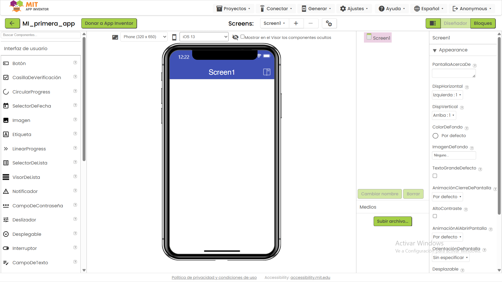
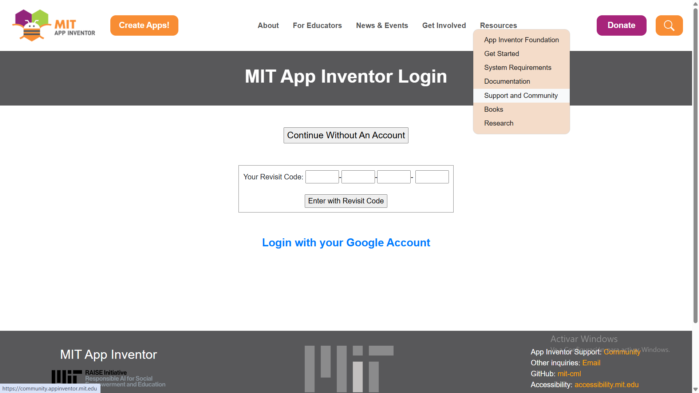
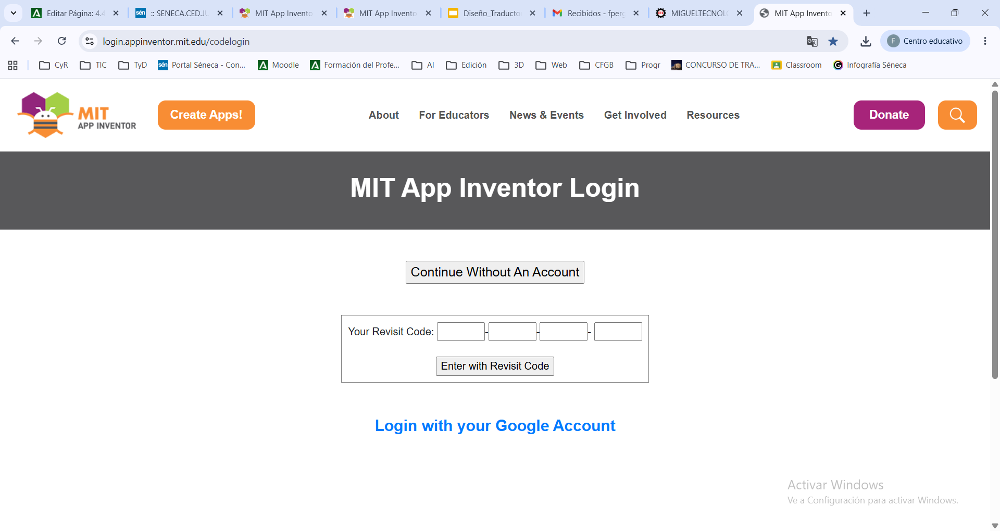
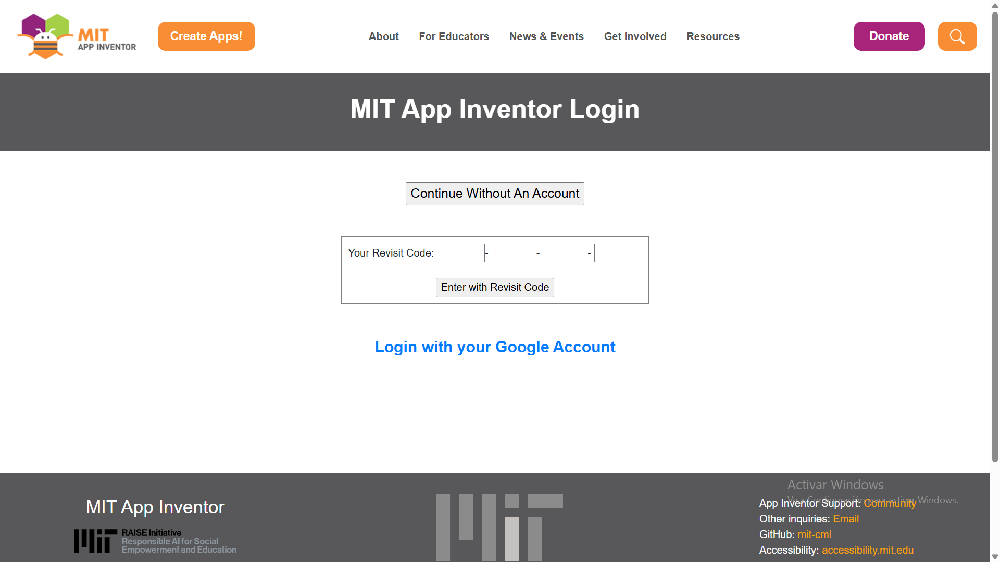

Introducción al desarrollo móvil con Thunkable
Introducción
En los primeros años de la era digital, la creación de aplicaciones móviles estaba reservada a aquellos con conocimientos avanzados en programación, capaces de entender y manejar complejos lenguajes de código.
Sin embargo, la tecnología, siempre en su empeño por derribar barreras, nos ha brindado herramientas que transforman esta realidad, convirtiendo la programación en una actividad accesible para todos. Entre estas herramientas se encuentran los IDEs de lenguajes de bloques para móviles, como App Inventor, que guiará nuestras prácticas a lo largo de este tema.
¿Qué es un IDE?
Un IDE (Entorno de Desarrollo Integrado) es como un taller digital todo en uno para personas que crean aplicaciones. Imagina que quieres construir un modelo de avión; en tu taller tendrías todas las herramientas necesarias, desde martillos hasta pegamento, organizadas y preparadas para ser usadas. De forma similar, un IDE proporciona a los programadores todas las herramientas que necesitan —como un editor para escribir y corregir código, un simulador para probar el programa y muchas otras ayudas—, en un único lugar.
La belleza de los IDEs de lenguajes de bloques reside en su capacidad para visualizar la programación. En lugar de escribir líneas de código, los usuarios construyen programas ensamblando bloques que representan diferentes funciones o acciones, similar a cómo se construiría un modelo con piezas de LEGO.

App Inventor
El 12 de julio de 2010, Google lanzó "Google App Inventor" como una herramienta para que personas sin conocimientos de código pudieran crear aplicaciones para el entonces joven sistema operativo Android.
Actualmente, la plataforma es gestionada por el MIT Computer Science and Artificial Intelligence Laboratory (CSAIL). Ha dejado de ser solo una herramienta escolar para convertirse en una plataforma potente que permite:
- Integrar Inteligencia Artificial (reconocimiento de imágenes y voz).
- Conectarse con dispositivos IoT (Internet de las Cosas) vía Bluetooth.
- Desarrollar aplicaciones reales para Android e iOS.
Tutorial: Primeros pasos en App Inventor
Paso 1: Entrar en la página de MIT App Inventor para registrarnos sin utilizar nuestra cuenta del instituto. Busca "mit app inventor sin cuenta" en Google y elige la segunda entrada.
Paso 2: La primera vez le damos a "Continues without an account", y anotamos el código con las cuatro palabras que utilizaremos para acceder las siguientes veces a nuestros proyectos.

Esta es la pantalla donde tendremos todos los proyectos (APPs) que creemos (al principio está vacía). Para crear nuestro primer proyecto, pulsamos en el botón "Comenzar un nuevo proyecto". Nos pide el nombre (por ejemplo "Primer proyecto") y pulsamos en "Aceptar".

Paso 3: Entramos en la pantalla de diseño de MIT App Inventor, en la que podemos distinguir las siguientes zonas:
- Barra de menús: Desde esta barra podemos acceder al gestor de proyectos, conectar con el emulador o dispositivo, generar el instalador APK, etc.
- Gestor de pantallas: Con estos botones podemos crear o eliminar pantallas en caso de APPs con varias pantallas.
- Diseñador/Bloques: Mediante estos botones podemos alternar entre los entornos del Diseñador y el Editor de bloques.
- Paleta de componentes: Estos son los componentes ordenados por categorías, que se pueden añadir a la pantalla de la aplicación arrastrándolos. Se pueden añadir más componentes mediante extensiones.
- Visor: Muestra una vista previa de la aplicación en la pantalla del dispositivo (podemos elegir el tipo de dispositivo).
- Componentes: Mediante una estructura de árbol permite acceder a los distintos elementos que hemos situado en esa pantalla.
- Propiedades: Permite definir los valores de los distintos parámetros del componente seleccionado. Si seleccionamos Screen1, podemos configurar aspectos generales de la APP como su nombre, icono, etc.
- Medios: Desde este botón podemos subir archivos para nuestra APP, como imágenes, sonidos, etc.

Paso 4: Si pulsamos el botón "Bloques", entramos en el entorno de programación mediante bloques de MIT App Inventor:
- Barra de menús (izquierda): Nos permite crear o borrar proyectos, descargar la App y probarla, y también dispone de un menú de ayuda.
- Barra de menús (derecha): Desde ella podemos ver todos nuestros proyectos, cambiar o cerrar nuestra sesión.
- Gestor de pantalla: Nos sirve para administrar nuestras ventanas.
- Bloques: Nos permite elegir las funciones: Control, Lógica, Matemáticas, Texto, Listas, Colores, Variables y Procedimientos.
- Vista: Aquí podemos ver nuestros bloques y unirlos.
- Mostrar avisos: Sirve para saber cuándo hay un error o incompatibilidad entre bloques.
- Mochila: Nos permite guardar un conjunto de bloques para usarlo en otro proyecto.
- Papelera: Permite borrar los bloques que no usemos.
Programación orientada a eventos en App Inventor
MIT App Inventor funciona mediante la programación orientada a eventos. El dispositivo no lleva a cabo una serie de operaciones en orden, sino que está esperando a que se active un evento, en cuyo caso ejecuta la respuesta programada para ese evento.
Por ejemplo: "Cuando el Botón1 sea pulsado → Toma una foto con la Cámara1".
Los eventos pueden ser divididos en 2 tipos diferentes: automáticos e iniciados por el usuario. Hacer clic en un botón, tocar o arrastrar en la pantalla, inclinar el teléfono son eventos iniciados por el usuario. Cuando en un juego choca una bola contra el borde, un temporizador, cuando llega un mensaje, son eventos no iniciados por el usuario.
Actividad
Registrarse en MIT App Inventor sin cuenta institucional. Seguir los pasos del tutorial para familiarizarse con el entorno del Diseñador y del Editor de Bloques.